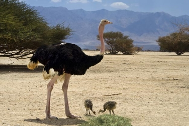
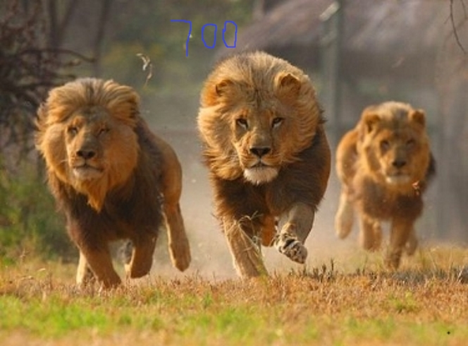
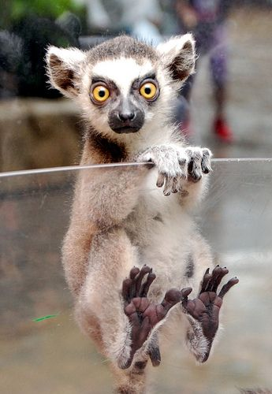

THE FACTS
African continent support a rich wildlife across its deserts, savannas, huge valleys and forests. Africa is home to the largest land animal (African elephant) and tallest animal (giraffe) in the world. But there are many other cool African animals you need to know about.
The wild animals of Africa are some of the most incredible creatures in the world. On this continent you will find the fastest, largest, and weirdest animals on the earth, many of which are unfortunately endangered species.
In Cameroon you can find frogs that are a foot long. They are the largest frogs in the world and are appropriately named goliath frogs
Did You Know...
- Four of the five fastest land animals in the world are found on the African continent. They are the Cheetah, Wildebeest, Lion, and the Thomson's gazelle. The Wildebeest, Lion, and the Thomson's gazelle can reach a speed of up to 50 mph (80.47 KPH) for short burst. The Cheetah can hit an unbelievable 70 mph (112.65 KPH) for short burst.
- Over 1,100 species of mammals and 2,600 species of birds are living in Africa
- What large animal kills the most people in Africa? Not the lion, and not the crocodile; it is in fact the hippo. The males are very territorial and will attack anything that enters their area.They have even been known to kill crocodiles.
- The African elephant is by far the largest living land mammal. It can weigh up to seven tons (6350.29 kilograms). Second in size only to the African elephant are Rhinos. Adult White Rhinos can weigh in at six thousand pounds (2721 kilograms).Male African lions can weigh up to 550 pounds (250 kg) and have been known to occasionally attack elephants.
- In Cameroon you can find frogs that are a foot long. They are the largest frogs in the world and are appropriately named goliath frogs.
Below you will find a few basic facts about some random African animals. These facts are meant for kids and adults interested in what types of wildlife exist in Africa and how these animals survive.
Ostrich
World's largest extant bird species.
- Ostriches are found in savannas and desert lands of Central and Southern Africa.They are omnivorous and they feed on leaves, roots, seeds, lizards, insects and snakes.
- Ostriches' heights spans from 7 feet to 9 feet, and their weights between 250 and 350 pounds.
- They are also known as ‘camel birds’ because they can withstand high temperature and can live for a long period without water.
- Ostriches don't need to drink water; they get all the water they need from the plants they eat. However, they do drink if they come across a watering hole.
- Ostrich eggs are 6 inches in diameter and can weigh up to 3 lbs. Males, as well as females, sit on the eggs until they hatch, which can take 42 to 46 days.Their lifespan is 50-75 years
With powerful long legs, ostriches can reach up to a maximum speed of 43 mph. Each two-toed foot of ostriches has very sharp claws. Their legs are powerful enough to kill a human with a single kick. Ostriches used their legs as the main weapon to defend against the potential predators like lion, leopards, cheetahs, and hyenas.
Ostrich going after a Zoo keeper in Tanzania
Lions
Known as the second largest big cat in the world after tigers, Lions are not found in jungles. Instead, they can be found roaming the savannah grasslands and open plains of Africa. They have a lifespan of 10-14 years.
- These cats are loud: a lion’s roar can be heard up to 5 miles (8km) away. The males roar more loudly and frequently, usually to declare territory, call stray members of the pride and ward off rivals. Females call their cubs with quiet roars and also roar for backup when under threat
- The females do the hunting, yet the males get the first helping, even when there are cubs in the pride.
- They can see in the dark and most of the hunting is done at night, but they are not completely nocturnal. Lions are said to be crepuscular, which means that they are most active at twilight (just before sunrise or just after sunset). They are however opportunistic feeders that will hunt at any time.
- African lions eat large animals that they find in the grasslands, including antelopes, zebras and wildebeest. They can kill animals that weigh up to 1,000 lbs.
- Male African lions that are trying to take over a pride will kill all of the cubs to avoid competition.
Mating Season: Throughout the year.
Gestation: Around 110 days.
African Elephants
The African elephant is the largest animal walking the Earth. Their herds wander through 37 countries in Africa.
There are two subspecies of African elephants—the Savanna (or bush) elephant and the Forest elephant. Savanna elephants are larger than forest elephants, and their tusks curve outwards. In addition to being smaller, forest elephants are darker and their tusks are straighter and point downward.
Difference between Asian and African elephants
Things To Know
- They are herbivores, can eat up to 300 pounds of food daily and can drink up to 53 gallons of water at a single time.
- Males can weigh over 13,000 pounds and can be up to 13 feet tall at the shoulder. Their tusks can be up to 6.5 feet long.
- An elephant's trunk is an amazing thing. The trunk has over 40,000 muscles and is used to smell, grab food and other objects, lift, drink, dig, and balance. Finger-like appendages at the tip of the trunk are able to pick up very small objects like twigs.
- Very few predators will attack a healthy adult African elephant. However lions and hyenas will prey on the sick and young.Poachers hunt them for their ivory tusks, which are extremely valuable.
- Like humans these social creatures respond to the death of a herd member in ritualized ways. Elephants often 'bury' the deceased and stay at the grave for a few days, even showing signs of mourning.
- These animals do not have great eyesight but do have a very good sense of smell and hearing.Baby elephants are born almost blind and some individuals suck their trunks for comfort, similar to the way young humans suck their thumbs.

African elephants were moved from Endangered in 1996 to Vulnerable in 2004, remaining Vulnerable to date.
Lemur
Lemur is an amazing primate that found only the Island of Madagascar, in the East coast of Southern Africa. There are 30 different known species of lemurs in total and all are endemic to Madagascar.
Facts About Lemurs
- Lemurs are one of the most intelligent animals in the world. They are known for using tools and have ability to learn patterns.
- Lemurs are social animals and live in groups. Lemur use high pitched calls and scent markings to communicate with each other. They have an excellent sense of hearing and smell.
- The madame berthe’s mouse lemur which weigh only 30 g is the smallest primate in the world. The Indri or Babakoto is the largest living lemur which weigh up to 9.5 kg.
- The diet of lemurs consists of fruits, nuts, leaves and flowers. The Fossa is the only natural predator of lemur.
Madame lemur feeding mouses lemurs